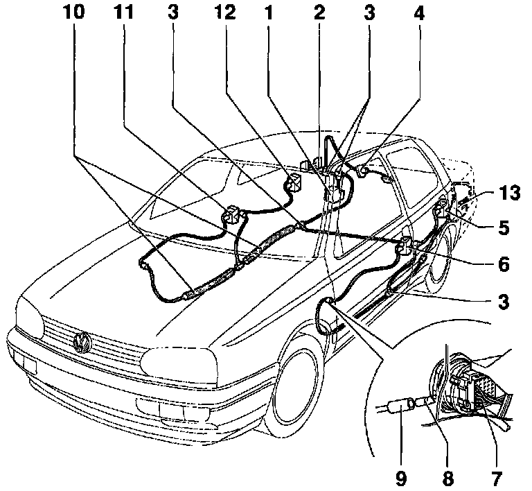
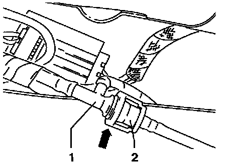

Power Locks: Service and Repair

1- Central locking system pump and control module -V69- (Golf)
2- Fuel tank flap, actuator
- To remove, loosen luggage compartment trim near wheel housing
3- T-connector
- Location: near B-pillar/rocker panel, covered by sill molding
4- Rear lid, actuator
5- Rear door latch, actuator
6- Front door latch, actuator
- Incorporates driver's door central locking system switch -F59-
7- Multi-pin harness connector
- Location: Near A-pillar
- Also near B-pillar on 4-door vehicles
8- Color marking
- Bi-pressure hoses must be pushed into bi-pressure hose connectors -9- up to color marking
9- Bi-pressure hose connector
- Two types: integral with multi-pin harness connector -7-, or separate
- Integral type: multi-pin connector must be separated to allow connection of hi-pressure hose
- Separate type: bi-pressure hose connector -9- must be pushed back into multi-pin connector -7- after bi-pressure hose is connected
10- Foam tube
- Passenger's side only
11- Front door latch, actuator
- Incorporates passenger's door central locking system switch -F114-
12- Rear door latch, actuator
13- Central locking system pump and control module -V69- (Jetta)
NOTE:
Updated couplings and junctions have gradually been introduced for the actuators and the bi-pressure pump.

- Release coupling -1- by pressing ring (arrow) together.
Check that coupling is correctly engaged when reconnecting
Junction -1- is also connected via these couplings.

- Release coupling -1- by pressing ring (arrow) together.
Check that coupling is correctly engaged when reconnecting